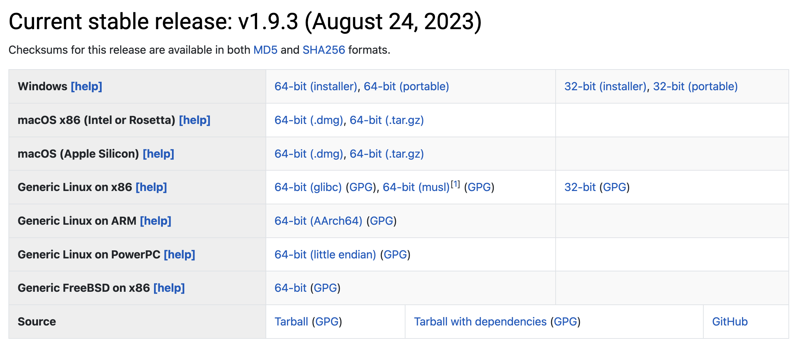
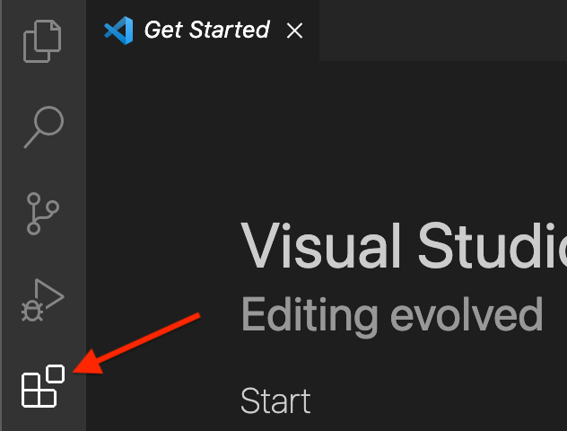
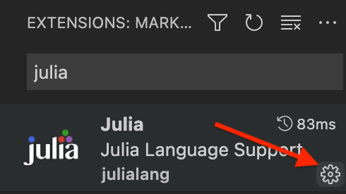
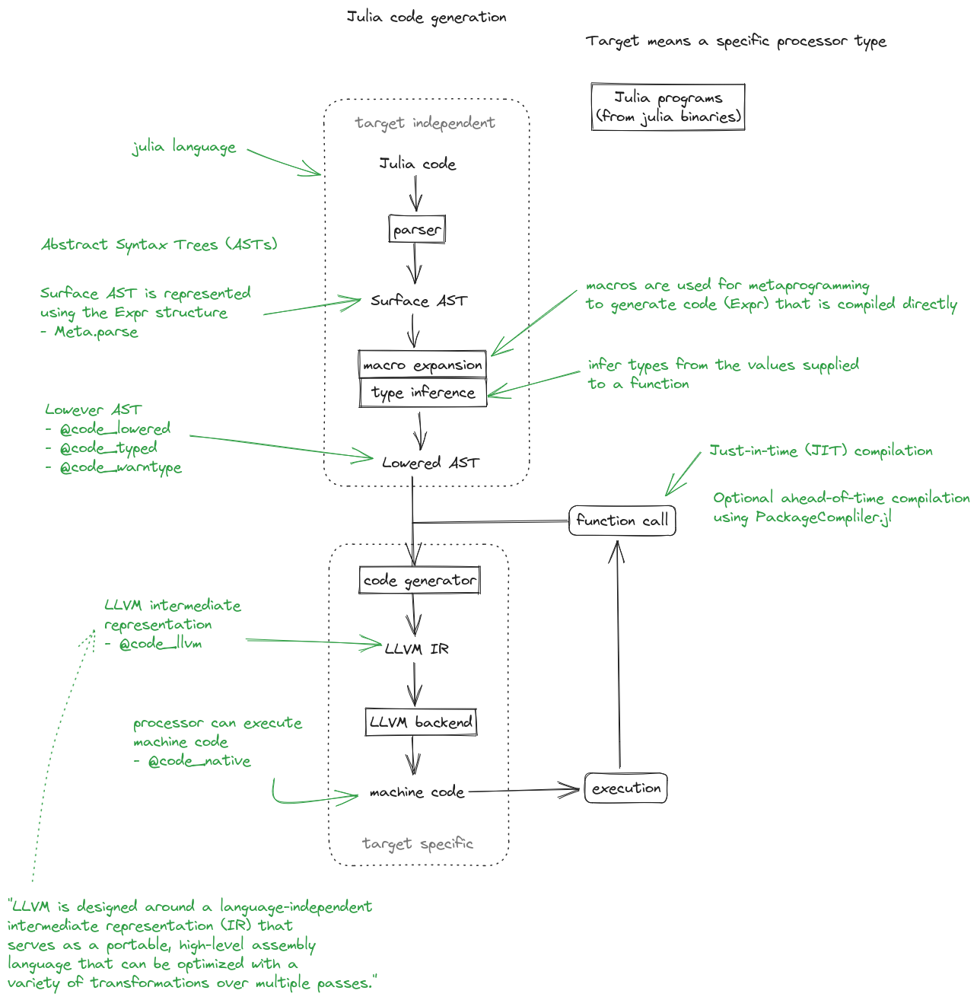

Introduction to programming in Julia¶
Julia is a scientific programming language that is free and open source - see the official website for downloads, documentation, learning resources etc. Bridging high-level interpreted and low-level compiled languages, it offers high performance (comparable to C and Fortran) without sacrificing simplicity and programming productivity (like in Python or R).
Julia has a rich ecosystem of libraries aimed towards scientific computing and a powerful in-built package manager to install and manage their dependencies. Julia is also gaining ground in both data science and high-performance computing (HPC), thanks to a rich package ecosystem around data analysis and visualisation, machine learning, deep learning, threading and distributed-memory parallelisation, as well as GPU computing.
This lesson covers the basics of Julia: its syntax, multiple-dispatch paradigm, package development and best practices. It spans the necessary foundational skills required to follow the two other ENCCS lessons on Julia:
Prerequisites
Experience in one or more programming languages.
Basic familiarity with a command line (terminal) interface.
Setup¶
Please follow the instructions on this page to install both Julia and VS Code with the Julia plugin on your machine.
Installing Julia¶
There are two ways to install Julia:
Downloading an installer for your operating system for the latest stable Julia version.
Using Juliaup, the Julia version manager.
Option 2 is the recommended installation method on Windows, MacOS and Linux. The benefit of juliaup is that it allows users to install specific Julia versions, it alerts users when new Julia versions are released and it provides a convenient Julia release channel abstraction. Both installation methods are nonetheless documented here.
1. Using the Julia installer¶
First download the latest stable release of Julia for your operating system from the julialang.org website.

Follow the instructions to complete the installation.
Platform-specific instructions can be found here. It is convenient to be able to run Julia from the command line, so follow the instructions to add Julia to $PATH. For Windows users who do not already have a terminal installed, we recommend to install the Windows Terminal from the Microsoft Store.
2. Using Juliaup¶
Full instructions can be found at https://github.com/JuliaLang/juliaup.
In short:
On Windows you can install Julia and Juliaup either through the Windows store or on a command line by executing
winget install julia -s msstore.On MacOS or Linux, type
curl -fsSL https://install.julialang.org | shon a command line and follow the instructions.
3. Checking your installation¶
Regardless of how you installed Julia, please ensure that you can open the Julia
REPL by typing julia on the command line in a terminal, or by clicking the
Julia icon on your Desktop or Applications folder. You should see something like
in the image below (disregard the version number).

Type versioninfo() to get detailed information about the installed Julia runtime.
To exit the REPL again, hit CTRL-d or type exit().
Development environment¶
In principle, you only need your preferred text editor and the REPL to start writing Julia. However, your experience might be better using a fully fledged IDE like Visual studio Code or Zed; both have extensions for Julia. With some more preliminary effort you can also use Neovim with some LSP plugins. In the following, we provide specific instructions for VS Code.
First install VSCode according to the official documentation.
Installing the VSCode Julia extension¶
After starting VSCode, click the Extensions button on the left-side menu, type Julia and
click Install` to install the Julia extension.
{kind=link}


You now need to configure the Julia extension and set the path to the Julia executable.
Click the cogwheel button next to the Julia extension:
{kind=link}

Then find the Julia: Executable Path field:

In this field enter the path to the Julia executable that you have installed.
If you are curious, scroll through the other possible configuration settings!
(Optional) Installing JupyterLab and a Julia kernel¶
JupyterLab can most easily be installed through the Miniconda Python distribution. If you already have a working Jupyter installation feel free to skip to the next subsection.
To install Miniconda, visit https://docs.conda.io/en/latest/miniconda.html,
download an installer for your operating system and follow the instructions.
After activating a conda environment in your terminal, you can install
JupyterLab with the command conda install jupyterlab.
Add Julia to JupyterLab¶
To be able to use a Julia kernel in a Jupyter notebook you need to
install the IJulia Julia package. Open the Julia REPL and type:
using Pkg
Pkg.add("IJulia")
Create a Julia notebook¶
Now you should be able to open up a JupyterLab session by typing
jupyter-lab in a terminal, and create a Julia notebook by clicking
on Julia in the JupyterLab Launcher or by selecting File > New > Notebook
and selecting a Julia kernel in the drop-down menu that appears.
Running Julia jobs on LUMI¶
Running Julia batch jobs¶
In order to run Julia batch jobs on LUMI, we use the following directory structure and assume it is in your working directory.
.
├── script.jl # Julia script
└── batch.sh # Slurm batch script
An example of the batch.sh script is shown below.
#!/bin/bash -l
#SBATCH --account=project_465001310
#SBATCH --partition=small
#SBATCH --time=00:10:00
#SBATCH --nodes=1
#SBATCH --ntasks-per-node=1
#SBATCH --cpus-per-task=1
#SBATCH --mem-per-cpu=1000
module use /appl/local/csc/modulefiles
module load julia
julia script.jl
An example of the script.jl code is provided below.
println("Hello, Julia")
println(2+3)
println(big(10)^19)
println("----EOF----")
Run the command sbatch batch.sh to submit your jobs at the right directory.
Running Julia interactive jobs¶
Interactive jobs allow a user to interact with applications on compute nodes. With an interactive job, you request time and resources to work on a compute node directly, which is different to a batch job where you submit your job to a queue for later execution.
You can either use salloc + srun or just use srun to create an interactive session. The two options are similar to sbatch.
Using salloc + srun
Using salloc, you allocate resources and spawn a shell used to execute the computing task.
$ salloc -A project_465001310 -N 1 -t 0:10:00 -p standard-g
Once the allocation is made, this command will start a shell on the login node. You can start your computation on the allocated node(s) with srun.
$ module use /appl/local/csc/modulefiles
$ module load julia
$ srun --ntasks-per-core=1 julia script.jl
Using srun
For simple interactive session, you can use srun with no prior allocation. In this scenario, srun will first create a resource allocation in which to run the job. For example, to allocate 1 node for 10 minutes and spawn a shell to run your computational task.
$ module use /appl/local/csc/modulefiles
$ module load julia
$ srun --account=project_465001310 --partition=standard-g --nodes=1 --cpus-per-task=1 --ntasks-per-node=1 --time=0:10:00 --pty julia script.jl
Motivation¶
Questions
What is the two-language problem?
How performant is Julia?
What is composability?
What will we learn and not learn in this lesson?
Instructor note
15 min teaching
Why was Julia created?¶
Julia has been designed to be both fast and dynamic. In the words of its developers:
We want a language that’s open source, with a liberal license. We want the speed of C with the dynamism of Ruby. We want a language that’s homoiconic, with true macros like Lisp, but with obvious, familiar mathematical notation like Matlab. We want something as usable for general programming as Python, as easy for statistics as R, as natural for string processing as Perl, as powerful for linear algebra as Matlab, as good at gluing programs together as the shell. Something that is dirt simple to learn, yet keeps the most serious hackers happy. We want it interactive and we want it compiled. (Did we mention it should be as fast as C?)
From Why We Created Julia by Jeff Bezanson, Stefan Karpinski, Viral B. Shah and Alan Edelman.
Speed¶
Many researchers and programmers are drawn to Julia because of its speed. Indeed, Julia is among the few languages in the exclusive petaflop club along with C/C++ and Fortran.

Micro-benchmarks comparing Julia with many other languages. Taken from the Julia benchmarks section.¶
The two-language problem¶
Combining languages
Have you ever written and prototyped code in a high-level language and then found it necessary to rewrite or port it to a different language for performance?
To run code in any programming language, some sort of translation into machine instructions needs to take place, but how this translation takes place differs between programming languages:
Interpreted languages like Python (to some level) and R translate instructions at runtime;
Compiled languages like C/C++ and Fortran are translated by a compiler prior to running the program.
The benefits of interpreted languages are that they are easier to read and write because less information on aspects like types and array sizes needs to be provided. Programmer productivity is thus generally higher in interpreted languages. Compiled languages, while generally being clunkier to write, can achieve much better performance. This is due to the fact that the programmer usually needs to specify the types (and possibly sizes) of variables, and the compiler can apply clever optimisations when translating to machine code.
In many ways Julia looks like an interpreted language, and mostly behaves
like one. But before each function is executed, Julia’s LLVM compiler will
compile it just in time" (JIT). Thus you get the flexibility of an
interpreted language and the execution speed of the compiled language at the
cost of waiting a bit longer for the first execution of any function. Indeed,
when packages are first added and instantiated in Julia, they are precompiled,
and the user has to wait for that process to happen. This longer TTFP (time to
first plot) used to be a pain point in Julia, but the user experience has been
greatly improved by optimising which code paths are pre-generated.
Composability¶
Julia is highly composable, which means that by writing generic code, components (packages) that have been developed independently can simply be used together and the result is exactly what you would expect.
A well known example is the interplay between DifferentialEquations.jl, a package for solving differential equations, and Measurements.jl, a package for working with magnitudes where uncertainties are explicitly reckoned.
Here’s an example solving the simple pendulum equation (adapted from https://tutorials.sciml.ai/):
using DifferentialEquations, Measurements, Plots
g = 9.79 ± 0.02; # Gravitational constants
L = 1.00 ± 0.01; # Length of the pendulum
#Initial Conditions
u₀ = [0 ± 0, π / 3 ± 0.02] # Initial speed and initial angle
tspan = (0.0, 6.3)
#Define the problem
function simplependulum(du,u,p,t)
θ = u[1]
dθ = u[2]
du[1] = dθ
du[2] = -(g/L) * sin(θ)
end
#Pass to solvers
prob = ODEProblem(simplependulum, u₀, tspan)
sol = solve(prob, Tsit5(), reltol = 1e-6)
plot(sol.t, getindex.(sol.u, 2), label = "Numerical")
The result is a plot of the solution to the differential equation with error bars!

Drawbacks and workarounds¶
Time to first plot: as mentioned earlier, if you open the Julia REPL and
type in a plotting command, it will take a few seconds for the plot to appear
because Julia needs to precompile the fairly large Plots.jl package. This
makes Julia unsuitable for small scripts that get called frequently to perform
light work.
Workaround 1: use instead long-running REPL sessions/kernels
Workaround 2: package authors can use PrecompileTools.jl to compile in advance the most used code paths, which makes for a better user experience.
Generally speaking, this is a lesser issue compared to earlier Julia versions, due to a number of optimisations integrated at both the language and packaging levels, e.g. by using images which include the most used packages.
Ecosystem: The ecosystem of packages is less mature than e.g. Python and R, so you might not find a package that corresponds exactly to your favorite package in another language.
Workaround 1: It’s straightforward to use external libraries written in Python or R
Workaround 2: Writing fast Julia code is easy and fun, so you might consider writing your own version!
Rapid package evolution: Although most major packages have stabilized, there are still many packages that go through frequent large changes that can break your code.
Workaround: Julia comes with a powerful package manager and in-built support for isolated software environments where dependencies can be recorded exactly. Reproducibility is made very easy.
What you will learn¶
Julia’s syntax and language constructs.
What’s different in Julia compared to most other languages.
Tooling for writing Julia.
How to efficiently develop Julia modules and packages and write unit tests.
Which packages exist in Julia across many scientific domains.
This lesson focuses on the basics of the Julia language and how to get started with efficiently developing in Julia. If you want to go further and learn about how Julia can be used for high performance computing (HPC) and data science / high performance data analysis, we recommend the following two ENCCS lessons:
This lesson should be seen as the starting point for learning the ins and outs of the Julia language. Make sure to go through the recommended additional reading at the end of each episode to learn more.
See also¶
Jeff Bezanson Stefan Karpinski Viral B. Shah Alan Edelman. Why We Created Julia
Introduction to Julia syntax¶
Questions
How do I run Julia?
What does basic Julia syntax look like?
Instructor note
30 min teaching
20 min exercises
This episodes provides a condensed overview of Julia’s main syntax and features.
Video alternative
As an alternative to going through this page, learners can also watch this video which covers “a 300 page book on Julia in one hour”.
Coming from other languages
If you are coming from MATLAB, R, Python, C/C++ or Common Lisp, you should also have a look at this page which lists the respective differences in Julia.
Running Julia¶
We can write Julia code in various ways:
REPL (read-evaluate-print-loop). Start it by typing
julia(or the full path of your Julia executable) on your command line. The REPL has four modes:Julian mode - default mode where prompt starts with
julia>. Here you enter Julia expressions and see output.Type
?to go to Help mode where prompt starts withhelp?>. Julia will print help/documentation on anything you enter.Type
;to go to Shell mode where prompt starts withshell>. You can type any shell commands as you would from terminal.Type
]to go to Package mode where prompt starts with(@v1.12) pkg>(if you have Julia version 1.12). Here you can add packages withadd, update packages withupdateetc. To see all options type?.To exit any non-Julian mode, hit Backspace key.
Jupyter: Jupyter notebooks are familiar to many Python and R users.
Pluto.jl: Pluto offers a similar notebook experience to Jupyter, but in contrast to Jupyter, Pluto notebooks are reactive, i.e. understand global references between cells, and re-evaluate cells affected by a code change.
Visual Studio Code (VSCode):
a full-fledged Integrated Development Environment which is very useful for larger codebases. Extensions are needed to activate Julia inside VSCode, see the official documentation for instructions.
A text editor like nano, emacs, vim, etc., followed by running your code with
julia filename.jl.
Firing up Julia
If Julia has been installed according to the instructions in
Setup it should be possible to open up a Julia session by
typing julia in a terminal window or by clicking on the Julia
application in a file browser. The result should look something like this:
Using Julia on the LUMI cluster.
Add CSC’s local module files to the module path, then load the Julia module, and check the current version of Julia.
module use /appl/local/csc/modulefiles
module load julia
julia --version
Basic syntax¶
Feature |
Example syntax and its result/meaning |
|---|---|
Arithmetic |
|
Types |
|
Special values |
|
Let us explore some basic types in the Julia REPL:
typeof(1)
# Int64
typeof(1.0)
# Float64
typeof(1.0+2.0im)
# ComplexF64
supertypes(Float64)
# (Float64, AbstractFloat, Real, Number, Any)
subtypes(Real)
# 4-element Vector{Any}:
# AbstractFloat
# AbstractIrrational
# Integer
# Rational
Vectors and arrays¶
Feature |
Example syntax and its result/meaning |
|---|---|
1D arrays |
|
Indexing and slicing |
|
Multidimensional arrays |
|
Manipulating arrays |
|
Inspecting array properties |
|
We can play around with Vectors and Arrays to get used to their syntax:
v1 = [1.0, 2.0, 3.0]
# 3-element Vector{Int64}:
m1 = [1.0 2.0 3.0]
# 1×3 Matrix{Int64}:
# broadcasting
v2 = v1.^2
v3 = v2 .- v1
# slicing
v1[2:3]
v1[begin:2:end]
# combine vectors into matrix
A = [v1 v2 [7.0, 6.0, 5.0]]
size(A)
length(A)
A[1:2, 1] = [3,3] # types are cast automatically
# solve Ax=b
b = [4.0, 3.0, 2.0]
x = A \ b
# test with matrix-vector multiply
A*x == b
# true
Loops and conditionals¶
for loops iterate over iterables, including types like Range, Array, Set and Dict.
for i in [1,2,3,4,5]
println("i = $i")
end
A = [1 2; 3 4]
# visit each index of A efficiently
for i in eachindex(A)
println("i = $i, A[i] = $(A[i])")
end
for (k, v) in Dict("A" => 1, "B" => 2, "C" => 3)
println("$k is $v")
end
for (i, j) in ([1, 2, 3], ("a", "b", "c"))
println("$i $j")
end
Conditionals work like in other languages.
if x > 5
println("x > 5")
elseif x < 5 # optional elseif
println("x < 5")
else # optional else
println("x = 5")
end
The ternary operator exists in Julia:
a ? b : c
The meaning is [condition] ? [execute if true] : [execute if false].
While loops:
n = 0
while n < 10
n += 1
println(n)
end
Functions¶
A function is an object that maps a tuple of argument values to a return value.
Example of a regular, named function:
function f(x,y)
x + y # can also use "return" keyword
end
A more compact form:
f(x,y) = x + y
This function can be called by f(4,5).
The expression f refers to the function object, and can be passed
around like any other value (functions in Julia are first-class objects):
g = f
g(4,5)
Functions can be combined by composition:
f(x) = x^2
g(x) = sqrt(x)
f(g(3)) # returns 3.0
An alternative syntax is to use ∘ (typed by \circ<tab>)
(f ∘ g)(3) # returns 3.0
Most operators (+, -, * etc) are in fact functions, and can be used as such:
+(1, 2, 3) # 6
# composition:
(sqrt ∘ +)(3, 6) # 3.0 (first summation, then square root)
Just like Vectors and Arrays can be used element-wise (vectorised)
with dot-operators (e.g., [1, 2, 3].^2), functions can also be vectorised (broadcasting):
sin.([1.0, 2.0, 3.0])
Keyword arguments can be added after ;:
function greet_dog(; greeting = "Hi", dog_name = "Fido") # note the ;
println("$greeting $dog_name")
end
greet_dog(dog_name = "Coco", greeting = "Go fetch") # "Go fetch Coco"
Optional arguments are given default value:
function date(y, m=1, d=1)
month = lpad(m, 2, "0") # lpad pads from the left
day = lpad(d, 2, "0")
println("$y-$month-$day")
end
date(2021) # "2021-01-01
date(2021, 2) # "2021-02-01
date(2021, 2, 3) # "2021-02-03
Argument types can be specified explicitly:
function f(x::Float64, y::Float64)
return x*y
end
Return types can also be specified:
function g(x, y)::Int8
return x * y
end
Additional methods can be added to functions simply by new definitions with different argument types:
function f(x::Int64, y::Int64)
return x*y
end
To find out which method is being dispatched for a particular function call:
@which f(3, 4)
It’s important to realise that a method in Julia represent something different than what is meant in object oriented languages: here, a method is a particular instance of a function with particular arguments. It requires a shift in thinking compared to OOP, with the question moving from “Does this object implement this method?” to “Does this function have method with these arguments?”. As functions in Julia are first-class objects, they can be passed as arguments to other functions. Anonymous functions are useful for such constructs:
map(x -> x^2 + 2x - 1, [1, 3, -1]) # passes each element of the vector to the anonymous function
Varargs functions can take an arbitrary number of arguments:
f(a,b,x...) = a + b + sum(x)
f(1,2,3) # 6
f(1,2,3,4) # 10
“Splatting” is when values contained in an iterable collection are split into individual arguments of a function call:
x = (3, 4, 5)
f(1,2,x...) # 15
# also possible:
x = [1, 2, 3, 4, 5]
f(x...) # 15
Julia functions can be piped (chained) together:
1:10 |> sum |> sqrt # 7.416198487095663 (first summed, then square root)
Inbuilt functions ending with ! mutate their input variables, and this
convention should be adhered to when writing own functions.
Compare, for example:
A = [1 2; 3 4]
sum(A) # gives 10
sum!([1 1], A) # mutates A into 1x2 Matrix with elements 4, 6
Working with files¶
Obtain a file handle to start reading from file, and then close it:
f = open("myfile.txt")
# work with file...
close(f)
The recommended way to work with files is to use a do-block. At the end of the do-block the file will be closed automatically:
open("myfile.txt") do f
# read from file
lines = readlines(f)
println(lines)
end
Writing to a file:
open("myfile.txt", "w") do f
write(f, "another line")
end
Some useful functions to work with files:
Function |
What it does |
|---|---|
|
Show current directory |
|
Change directory |
|
Return list of current directory |
|
Create directory |
|
Add current dir to filename |
|
Join two paths |
|
Check if path is a directory |
|
Split path into tuple of dirname and filename |
|
Return home directory |
Exception handling¶
Exceptions are thrown when an unexpected condition has occurred:
sqrt(-1)
DomainError with -1.0:
sqrt will only return a complex result if called with a complex argument. Try sqrt(Complex(x)).
Stacktrace:
[1] throw_complex_domainerror(::Symbol, ::Float64) at ./math.jl:33
[2] sqrt at ./math.jl:573 [inlined]
[3] sqrt(::Int64) at ./math.jl:599
[4] top-level scope at In[130]:1
[5] include_string(::Function, ::Module, ::String, ::String) at ./loading.jl:1091
Exceptions can be handled with a try/catch block:
try
sqrt(-1)
catch e
println("caught the error: $e")
end
caught the error: DomainError(-1.0, "sqrt will only return a complex result if called with a complex argument. Try sqrt(Complex(x)).")
Exceptions can be created explicitly with throw:
function negexp(x)
if x>=0
return exp(-x)
else
throw(DomainError(x, "argument must be non-negative"))
end
end
The @assert macro can be used to throw an AssertionError if a condition does not hold:
@assert iseven(3) "3 is an odd number!"
# ERROR: AssertionError: 3 is an odd number!
Scope¶
The scope of a variable is the region of code within which a variable is visible. Certain constructs introduce scope blocks:
Modules introduce a global scope that is separate from the global scopes of other modules.
There is no all-encompassing global scope.
Functions and macros define hard local scopes.
for, while and try blocks and structs define soft local scopes.
When x = 123 occurs in a local scope, the following rules apply:
Existing local: If x is already a local variable, then the existing local
xis assigned.Hard scope: If
xis not already a local variable, a new local namedxis created in the same scope.Soft scope: If
xis not already a local variable, its behavior depends on whether global variablexis defined:if global
xis undefined, a new local namedxis created.if global
xis defined, the assignment is considered ambiguous.
Examples:
x = 123 # global
# hard scope
function greet()
x = "hello" # new local
println(x)
end
greet() # gives "hello"
println(x) # gives 123
function greet2()
global x = "hello"
end
greet2()
println(x) # gives "hello" (global x redefined)
# soft scope
x = 123
for i in 1:3
x = i
end
println(x)
# returns 3
x = 123
for i in 1:3
local x = i
end
println(x)
# returns 123
Further details can be found at HERE.
Style conventions¶
Names of variables are in lower case.
Word separation can be indicated by underscores (_), but use of underscores is discouraged unless the name would be hard to read otherwise.
Names of Types and Modules begin with a capital letter and word separation is shown with upper camel case instead of underscores.
Names of functions and macros are in lower case, without underscores.
Functions that write to their arguments have names that end in
!. These are sometimes called “mutating” or “in-place” functions because they are intended to produce changes in their arguments after the function is called, not just return a value.
Exercises¶
Practice yourself
Was anything unclear or covered too fast in the walkthrough above? Revisit it, read the material, play around yourself and ask questions in the shared workshop document!
Row vs column-major ordering?
Based on the output of the following loop:
A = [1 2; 3 4]
# visit each index of A efficiently
for i in eachindex(A)
println("i = $i, A[i] = $(A[i])")
end
can you tell whether Julia is row or column-major ordered? (i.e., whether arrays are stacked one row or one column at a time in memory)
Solution
This code produces the following output:
# i = 1, A[i] = 1
# i = 2, A[i] = 3
# i = 3, A[i] = 2
# i = 4, A[i] = 4
which shows that Julia loops over columns since it’s a column-major language!
Reading files
Write a function which opens and reads a file and returns the number of words in it. Here are example codes for this task in other languages which you can translate:
def count_word_occurrence_in_file(file_name, word):
"""
Counts how often word appears in file file_name.
Example: if file contains "one two one two three four"
and word is "one", then this function returns 2
"""
count = 0
with open(file_name, 'r') as f:
for line in f:
words = line.split()
count += words.count(word)
return count
#include <fstream>
#include <streambuf>
#include <string>
/* Counts how often word appears in file fname.
* Example: if file contains "one two one two three four"
* and word is "one", then this function returns 2
*/
int count_word_occurrence_in_file(std::string fname, std::string word) {
std::ifstream fh(fname);
std::string text((std::istreambuf_iterator<char>(fh)),
std::istreambuf_iterator<char>());
auto word_count = 0lu; // will be used for indexing and therefore it has to be *long unsigned* int for the safe conversion to 'std::__cxx11::basic_string<char>::size_type'.
auto count = 0;
for (const auto ch : text) {
if (ch == word[word_count]) ++word_count;
if (word[word_count] == '\0') {
word_count = 0;
++count;
}
}
return count;
}
#' Counts how often a given word appears in a file.
#'
#' @param file_name The name of the file to search in.
#' @param word The word to search for in the file.
#' @return The number of times the word appeared in the file.
count_word_occurrence_in_file <- function(file_name, word) {
count <- 0
for (line in readLines(file_name)) {
words <- strsplit(line, ' ')[[1]]
count <- count + sum(words == word)
}
count
}
Solution
"""
count_word_occurrence_in_file(file_name::String, word::String)
Counts how often word appears in file file_name.
Example: if file contains "one two one two three four"
And word is "one", then this function returns 2
"""
function count_word_occurrence_in_file(file_name::String, word::String)
open(file_name, "r") do file
lines = readlines(file)
return count(word, join(lines))
end
end
FizzBuzz
Write a program that prints the integers from 1 to 100 (inclusive), except that:
for multiples of three, print “Fizz” instead of the number
for multiples of five, print “Buzz” instead of the number
for multiples of both three and five, print “FizzBuzz” instead of the number
If you prefer translating a FizzBuzz code from your favorite language to Julia, you can find it on Rosetta Code.
Solution
for i in 1:100
if i % 15 == 0
println("FizzBuzz")
elseif i % 3 == 0
println("Fizz")
elseif i % 5 == 0
println("Buzz")
else
println(i)
end
end
On the Rosetta Code page for FizzBuzz you find several other Julia versions.
Special features of Julia¶
Questions
How does the type system in Julia work?
Is Julia dynamically or statically typed?
What is multiple dispatch?
What is code introspection?
What is metaprogramming?
Instructor note
30 min teaching
30 min exercises
Types¶
Julia is a dynamically typed language and does not require users to explicitly declare types because types are inferred and used at runtime. The sophisticated type system helps Julia to generate efficient code.
All types in Julia are defined in Julia language itself. This means that custom types are just as efficient as built-in types.
Julia’s type system is also what enables multiple dispatch, that is, choosing the most specific method of a function based on the argument types. Multiple dispatch sets the language apart from most other languages and makes it composable and fast when combined with just-in-time (JIT) compilation using the LLVM compiler toolchain.
Since types play a fundamental role in Julia’s design it’s important to have a mental model of Julia’s type system. There are two basic kinds of types in Julia:
Abstract types which define the kind of a thing, that is, represent sets of related types.
Concrete types which describe data structures, that is, concrete implementations that can be used for variables.
Furthermore, a primitive type consists of plain bits such as an integer, character or floating point number. A parametric type represents a set of types. Types in Julia form a “type tree”, in which the leaves are concrete types.

Type hierarchy of number in Julia. Adapted from Wikimedia, licensed under CC BY-SA 4.0.¶
{kind=link}
Composite types¶
New types, i.e., new kinds of data structures, can be defined with the struct keyword,
or mutable struct if you want to be able to change the values of fields in the new data structure.
To take a classical example:
struct Point2D
x
y
end
One can also specify types of individual fields (but we can’t redefine structs, try running this code!):
struct Point2D
x::Float64
y::Float64
end
A new Point2D object can be defined by
p = Point2D(1.1, 2.2)
and its elements accessed by
p.x
Constructors¶
Composite type objects also serve as constructor functions. These create new instances of themselves when applied to an argument tuple as a function. Composite types have a default constructor which gets called when creating a new object, but it’s possible to explicitly define both inner and outer constructor methods.
If we define an inner constructor method, no default constructor is provided any longer. Inner
constructors have access to a special function called new() which creates a new object:
struct Point2D
x
y
Point2D(c::Complex) = new(c.re, c.im)
end
Point2D(1, 2) # only works if first version of Point2D is also defined!
# Point2D(1, 2)
Point2D(1 + 2im)
# Point(1, 2)
For this case, it would be better to define an additional outer constructor - just like when methods are added to a function:
struct Point2D
x
y
end
Point2D(c::Complex) = Point2D(c.re, c.im)
Point2D(1, 2)
# Point2D(1, 2)
Point2D(1 + 2im)
# Point2D(1, 2)
Parametric types¶
A useful feature of Julia’s type system are type parameters: the ability to use parameters when defining types. For example (using a new name since structs can not be redefined):
struct Point{T<:Real}
x::T
y::T
end
Note that we restrict the type T to be a subtype of Real.
We can now create Point variables with explicitly different types:
p1 = Point(1,2)
# Point{Int64}(1, 2)
p2 = Point(1.0, 2.0)
# Point{Float64}(1.0, 2.0)
Parametric types introduce a new family of new types, since
any specialized version Point{T} is a subtype of Point:
Point{Int64} <: Point # returns true
Point{Float64} <: Point # returns true
Design patterns¶
Julia is a multi-paradigm language that supports multiple types of design patterns, including object-oriented patterns. However, the Julian approach is to build code around the type system, leading to a different architecture compared to object-oriented languages.
Many Julia applications are built around type hierarchies involving both abstract and concrete types. Abstract types are used to model real-world data concepts and their behaviour.
For example, we can describe a type hierarchy to model animals:
abstract type AbstractAnimal end
abstract type AbstractDog <: AbstractAnimal end
abstract type AbstractCat <: AbstractAnimal end
struct BullDog <: AbstractDog
name::String
friendly::Bool
end
struct PersianCat <: AbstractCat
name::String
huntsmice::Bool
end
We can then define functions to define the behaviour of these types. Key to this approach is that subtypes inherit behaviour of their supertypes:
get_name(A::AbstractAnimal) = A.name
get_mouse_hunting_ability(A::AbstractCat) = return A.huntsmice ? "$(A.name) hunts mice" : "$(A.name) leaves mice alone"
If we now define a cat object we can use the methods defined for its abstract supertypes:
billy = PersianCat("Billy", true)
get_name(billy)
get_mouse_hunting_ability(billy)
Refer to the “See also” section below for more reading material on code design in Julia.
Functions and methods¶
Functions form the backbone of Julia code and we can define them using the
function keyword.
Each function can have multiple methods. A method is a function defined for
specific arguments types. We can define methods using the block form or short
form syntax. Example of a function in the block form:
function sumsquare(x, y)
return x^2 + y^2
end
For short functions such as this one, we can also use the short form:
sumsquare(x,y) = x^2 + y^2
We can pass in arguments with all kinds of types:
# Int64
sumsquare(2, 3)
# Float64
sumsquare(2.72, 3.83)
# Complex{Int64}
sumsquare(1+2im, 2-1im)
# Complex{Float64}
sumsquare(1.2+2.3im, 2.1-1.5im)
Note that our sumsquare function has no type annotations. The base
library of Julia has different implementations of + and ^ which
will be chosen (“dispatched”) at runtime according to the argument
types.
In most cases it’s fine to omit types. The main reasons for adding type annotate are:
Improve readability
Catch errors
Take advantage of multiple dispatch by implementing different methods to the same function.
Extending sumsquare
What happens if you try to call the sumsquare function with two
input arguments of type Point? Try it and try to make sense of the output.
Now add a new method to our sumsquare function for the
Point type.
We decide that the summed square of two points is a new Point:
Point(p1.x^2 + p2.x^2, p1.y^2 + p2.y^2)You will need to modify both the function signature and body.
Solution
Calling the original (un-extended) sumsquare function with two
Point variables returns the error
MethodError: no method matching ^(::Point{Int64}, ::Int64).
This means that Julia doesn’t know how to take powers of this type!
One way to implement the new sumsquare method for Point types is:
struct Point{T<:Real}
x::T
y::T
end
function sumsquare(p1::Point, p2::Point)
return Point(p1.x^2 + p2.x^2, p1.y^2 + p2.y^2)
end
p1, p2 = Point(1.0, 2.0), Point(2.0, 3.0)
sumsquare(p1, p2) # returns Point{Float64}(5.0, 13.0)
Note the output, sumsquare is now a “generic function with 2
methods”.
If we solved the exercise, we should now be able to call sumsquare
with Point types. The element types can still be anything!
p1 = Point(1, 2)
p2 = Point(3, 4)
sumsquare(p1, p2)
# returns Point{Int64}(10, 20)
cp1 = Point(1+1im, 2+2im)
cp2 = Point(3+3im, 4+4im)
sumsquare(cp1, cp2)
# returns Point{Complex{Int64}}(0 + 20im, 0 + 40im)
We can list all methods defined for a function:
methods(sumsquare)
# 2 methods for generic function "sumsquare":
# [1] sumsquare(p1::Point, p2::Point) in Main at REPL[35]:1
# [2] sumsquare(x, y) in Main at REPL[14]:1
We can even define a function with no methods for documentation purposes.
function sumsquare end
Methods and functions
A function describing the “what” can have multiple methods describing the “how”.
This differs from object-oriented languages in which objects (not functions) have methods.
Multiple dispatch is when Julia selects the most specialized method to run based on the types of all input arguments.
Best practice: constrain argument types to the widest possible level, and introduce constraints only if you know other argument types will fail.
Type stability¶
To compile specialized versions of a function for each argument type the compiler needs to be able to infer all the argument and return types of that function. This is called type stability, but unfortunately it’s possible to write type-unstable functions:
# type-unstable function
function relu_unstable(x)
if x < 0
return 0
else
return x
end
end
We can pass both integer and floating point arguments to this function, but if we pass in a negative float it will return an integer 0, while positive floats return a float. This can have a dramatically negative effect on performance because the compiler will not be able to specialize!
The solution is to use an inbuilt zero function to return a zero of the same
type as the input argument, so that inputting integers always gives
integer output and likewise for floats:
# type-stable function
function relu_stable(x)
if x < 0
return zero(x)
else
return x
end
end
Other convenience functions exist to make types consistent, including:
eltype()to determine the type of the array elementssimilar()to create an uninitialized mutable array with the given element type and size.
A quick way to check for type instabilities is to use the code_warntype
macro (read below to know what a macro is). E.g.:
@code_warntype relu_stable(1)
Code generation¶
Julia was designed from the beginning for high performance and this is accomplished by compiling Julia programs to efficient native code for multiple platforms via the LLVM compiler toolchain and just-in-time (JIT) compilation. The Julia runtime code generator produces an LLVM Intermediate Representation (IR) which the LLMV compiler then converts to machine code using sophisticated optimization technology.
Interpreted languages rely on a runtime which directly executes the source code.
Compiled languages rely on ahead-of-time compilation where source code is converted to an executable before execution.
Just-in-time compilation is when code is compiled to machine code at runtime.
{kind=link}

Adapted from “High-level GPU programming in Julia” by Tim Besard, Pieter Verstraete and Bjorn De Sutter .¶
To see the various forms of lowered code that is generated by the JIT compiler we can use several macros. Inspecting the lowered form for functions requires selection of the specific method to display, because generic functions may have many methods with different type signatures.
# Surface level AST
Meta.parse("sumsquare(1, 2)") |> dump
Meta.parse("sumsquare(p1, p2)") |> dump
# Lowered form of AST
@code_lowered sumsquare(1, 2)
@code_lowered sumsquare(p1, p2)
# Type-inferred lowered form of AST
@code_typed sumsquare(1, 2)
@code_typed sumsquare(1.0, 2.0)
@code_typed sumsquare(p1, p2)
# Lowered and type-inferred ASTs
@code_warntype sumsquare(1.0, 2.0)
@code_warntype sumsquare(p1, p2)
# LLVM intermediate representation:
@code_llvm sumsquare(1, 2)
@code_llvm sumsquare(1.0, 2.0)
@code_llvm sumsquare(p1, p2)
# native assembly instructions:
@code_native sumsquare(1, 2)
@code_native sumsquare(1.0, 2.0)
@code_native sumsquare(p1, p2)
Metaprogramming¶
We saw in the compilation diagram above that after parsing the source code, the Julia compiler generates an abstract syntax tree (AST) - a tree-like data structure representing the source code. This is a legacy from the Lisp language. Since code is represented by objects that can be created and manipulated from within the language, it is possible for a program to transform and generate its own code.
Let’s have a look at the AST of a simple expression:
Meta.parse("x + y") |> dump
It returns:
Expr
head: Symbol call
args: Array{Any}((3,))
1: Symbol +
2: Symbol x
3: Symbol y
These three symbols +, x and y are leaves of the AST.
A shorter form to create expressions is :(x + y).
We can create an expression and then evaluate it:
ex = :(x + y)
x = y = 2
eval(ex) # returns 4
A macro is like a function, except it accepts expressions as arguments, manipulates the expressions, and returns a new expression - thus modifying the AST.
We can for example define a macro to create a Wilkinson polynomial defined as follows:
Note the following pattern, we write a helper function that returns an expression and call that function from the macro. This is very useful for debugging while writing macros!
function _make_wilkinson(n)
pol = :(x - 1)
for i in 2:n
pol = :($pol * (x - $i))
end
name = Symbol(:wilkinson_, n)
return :($(name)(x) = $pol)
end
macro make_wilkinson(n)
return _make_wilkinson(n)
end
# creates the function wilkinson_5
@make_wilkinson 5
wilkinson_5(10)
To see what a macro expands to, we can use another macro:
@macroexpand @make_wilkinson 5
The output shows that a for loop has been generated:
:(Main.wilkinson_5(var"#21#x") = begin
#= REPL[17]:6 =#
((((var"#21#x" - 1) * (var"#21#x" - 2)) * (var"#21#x" - 3)) * (var"#21#x" - 4)) * (var"#21#x" - 5)
end)
Unicode support¶
Julia has full support for Unicode characters. Some are reserved for constants or operators, like π, ∈ and √, while the majority can be used for names of variables, functions etc. Unicode characters are entered via tab completion of LaTeX-like abbreviations in the Julia REPL or IDEs with Julia extensions, including VSCode. If you are unsure how to enter a particular character, you can copy-paste it into Julia’s help mode to see the LaTeX-like syntax.
function Σsqrt(Ω...)
σ = 0
for ω ∈ Ω
σ += √ω
end
σ
end
ω₁, ω₂, ω₃ = 1, 2, 3
σ = Σsqrt(ω₁, ω₂, ω₃)
It’s also reassuring to know that Julia can solve the chicken-and-egg dilemma:
problem = [:🥚, :🐔]
# 2-element Vector{Symbol}:
# :🥚
# :🐔
sort(problem)
# 2-element Vector{Symbol}:
# :🐔
# :🥚
Exercises¶
Write a composite type and a method that acts on it
Write a mutable struct called Ship with two fields: name (which is a String) and
location, which is a Point (define the Point type if needed).
Then write a function move!() which takes three arguments: a Ship object, and
two displacements, dx and dy.
Finally create a Ship object with a name and initial location, and call the move!()
method on it. Print the Ship object to see if it has moved.
Optional 1: Write an outer constructor for Ship which, instead of a Point object, takes x and y coordinates in separate arguments.
Optional 2: Write another method for the move!() where the x and y displacements are
defined by a Point type.
Solution
struct Point{T<:Real}
x::T
y::T
end
mutable struct Ship
name::String
location::Point
end
function move!(s::Ship, dx, dy)
oldloc = s.location
s.location = Point(oldloc.x+dx, oldloc.y+dy)
end
beagle = Ship("HMS Beagle", Point(1.0,2.0))
# Ship("HMS Beagle", Point{Float64}(1.0, 2.0))
move!(beagle, 2, 5)
print(beagle)
# Ship("HMS Beagle", Point{Float64}(3.0, 7.0))
# outer constructor
Ship(name, x, y) = Ship(name, Point(x,y))
vasa = Ship("Vasa", 4.0, 2.0)
# Ship("Vasa", Point{Float64}(4.0, 2.0))
# new method
function move!(s::Ship, p::Point)
oldloc = s.location
s.location = Point(oldloc.x+p.x, oldloc.y+p.y)
end
move!(beagle, Point(2,2))
print(beagle)
# Ship("HMS Beagle", Point{Float64}(5.0, 9.0))
Introspect type-stable and type-unstable functions
While the code-introspection macros produce complicated output which is hard for humans to read, some of them can be useful to write more efficient code.
@code_typedshows the types of our code inferred by the compiler.@code_warntypeshows type warnings and can be used to detect type instabilities.@code_llvmand@code_nativecan be used to see the size of the resulting low-level code (the fewer instructions the faster).
Use these macros to inspect the relu_unstable and relu_stable functions!
Observe how
@code_warntypewarns about the type instability when passing a floating point number: Julia is forced to use aUnion{Float64, Int64}type in the function body.What is the difference in the low-level code between the two functions when passing integers or floats?
Solution
The type-unstable function gives us a warning
(Body::Union{Float64, Int64} is in red in the REPL):
@code_warntype relu_unstable(1.0)
MethodInstance for relu_unstable(::Float64)
from relu_unstable(x) in Main at REPL[40]:2
Arguments
#self#::Core.Const(relu_unstable)
x::Float64
Body::Union{Float64, Int64}
1 ─ %1 = (x < 0)::Bool
└── goto #3 if not %1
2 ─ return 0
3 ─ return x
The warning is gone in the type-stable function:
@code_warntype relu_stable(1.0)
MethodInstance for relu_stable(::Float64)
from relu_stable(x) in Main at REPL[83]:2
Arguments
#self#::Core.Const(relu_stable)
x::Float64
Body::Float64
1 ─ %1 = (x < 0)::Bool
└── goto #3 if not %1
2 ─ %3 = Main.zero(x)::Core.Const(0.0)
└── return %3
3 ─ return x
There’s a big difference in the amount of low-level code generated for the type-stable and unstable functions:
; @ REPL[83]:2 within `relu_stable` define double @julia_relu_stable_841(double %0) #0 { top: ; @ REPL[83]:3 within `relu_stable` %.inv = fcmp olt double %0, 0.000000e+00 %1 = select i1 %.inv, double 0.000000e+00, double %0 ; @ REPL[83]:4 within `relu_stable` ret double %1 }; @ REPL[40]:2 within `relu_unstable` define { {}*, i8 } @julia_relu_unstable_845([8 x i8]* noalias nocapture align 8 dereferenceable(8) %0, double %1) #0 { top: ; @ REPL[40]:3 within `relu_unstable` ; ┌ @ float.jl:499 within `<` @ float.jl:444 %2 = fcmp uge double %1, 0.000000e+00 ; └ br i1 %2, label %L8, label %L7 L7: ; preds = %L8, %top %merge = phi { {}*, i8 } [ { {}* inttoptr (i64 4337979424 to {}*), i8 -126 }, %top ], [ { {}* null, i8 1 }, %L8 ] ; @ REPL[40]:4 within `relu_unstable` ret { {}*, i8 } %merge L8: ; preds = %top ; @ REPL[40]:6 within `relu_unstable` %.0..sroa_cast = bitcast [8 x i8]* %0 to double* store double %1, double* %.0..sroa_cast, align 8 br label %L7 }
Inspect a few macros
Use the @macroexpand macro to investigate what the following macros do:
@assert@fastmath@show@time@enum
Hint: You will typically need to give arguments to the macros you are inspecting. Have a look at the help page of a macro if you’re unsure how it’s used.
Solution
@macroexpand @assert 1==1
@macroexpand @fastmath 1+2
x = 1
@macroexpand @show x
x = rand(10,10);
@macroexpand @time x * x
@macroexpand @enum Fruit apple=1 orange=2 kiwi=3
See also¶
Developing in Julia¶
Questions
What development tools exist for Julia?
How can I write modules and packages in Julia?
How can reproducible environments be created?
How are tests written in Julia?
Instructor note
30 min teaching
30 min exercises
Tooling¶
We will now switch from the Julia REPL to Visual Studio Code (VSCode). While VSCode with the Julia extension is the preferred development environment for many Julia programmers, there are some alternatives:
Jupyter: Jupyter notebooks are familiar to many Python and R users.
Pluto.jl: Offers a similar notebook experience to Jupyter, but understands global references between cells, and reactively re-evaluates cells affected by a code change.
A text editor like nano, emacs, vim, etc., followed by running your code with
julia filename.jl. There are also plugins for Julia for major text editors - do an internet search on e.g. “emacs julia” or “vim julia” to find out more.
Using VSCode with the Julia extension¶
After following the Setup instructions to install VSCode and the Julia extension, we can fire up a VSCode session and explore the functionality.
Getting acquainted with VSCode
Open up VSCode either through a file browser or via the terminal command
code.We should see a Get started page where we can create a new file, open a folder or clone a git repository. The same options can be found in the Explorer menu in the left sidebar.
Let’s create a new text file. VSCode will ask for a language, which you can select from a menu, but we can also save it as a
.jlfile and VSCode will understand it’s a Julia file.Type
println("hello world!")in the file and save it to a new folder (e.g. a new folderworkshop/under ajulia/folder in your home directory).To execute the file, we can press the play button in the top right corner, or open up the command palette search with
Ctrl+Shift+p(CMDon Mac) and typeJulia: Execute active File in REPL, or by hittingShift+Enteron the code line like in Jupyter.A REPL should open up below our code file and show the result of the execution.
The Julia in VSCode documentation is a useful reference.
Modules¶
Code written in Julia is normally encapsulated in modules. Modules
have their own global scope (namespace) separate from the global scope of
other modules (including Main, the top-level module).
Modules are imported by either the using or import keywords.
The difference is how variables defined in the module are brought into scope:
With
using ModuleName, all exported names (variables and functions) in the module are brought into scope. Non-exported names are still available viaModuleName.func()orModuleName.var1.With
import ModuleName, all the module’s names need to be qualified, e.g.ModuleName.func()orModuleName.var1.
Creating a module
Let’s create a toy module based on the code in the previous section.
Save it in a new file Points.jl under e.g. $HOME/julia/workshop.
module Points
export Point, sumsquare
struct Point{T<:Real}
x::T
y::T
end
function sumsquare(p1::Point, p2::Point)
return Point(p1.x^2 + p2.x^2, p1.y^2 + p2.y^2)
end
end
We can now import and use the module. First we include it either by
include("Points.jl") or by hitting Shift+Enter to evaluate the whole file.
Since our new module is defined within
the current Main module, we need to import it with a dot in front, using .Points
(an alternative is to add our current path with the Points module to Julia’s
LOAD_PATH, push!(LOAD_PATH, pwd()), after which no dot is needed):
using .Points
p1 = Point(0.0, 1.0)
p2 = Point(1.0, 2.0)
p3 = sumsquare(p1, p2)
# list all names exported from our module
names(Points)
It should return a list of the three symbols :Points, :Point
and :sumsquare.
Revise¶
Before Revise.jl
was created, it was necessary to restart the Julia
REPL when developing a package for new changes to take effect in the REPL.
This is because calling using Example JIT-compiles the package.
With Revise loaded this is no longer needed - it cleverly finds what code
has been modified and reloads only that.
Revise is automatically loaded in VSCode, but if you are developing in
another editor you will need to install Revise and when developing a
package always do using Revise before using MyPackage.
A caveat when using VSCode is that when developing a script (i.e. not a full package),
files need to be included in Revise-tracked mode with includet("MyScript").
When developing packages everything works automatically.
Revise should be installed in the root Julia environment:
julia -e 'using Pkg; Pkg.add("Revise")'
Structure of a Julia package¶
Julia packages contain one top-level module (submodules are allowed),
defined in a source file under src/ with the same name as the
package itself.
All functions, variables and custom types of a package can be put in one module file or (more commonly) into multiple files named according to their functionality.
Inspecting a Julia package
Have a look at an example Julia package to get an overview of its structure: https://github.com/JuliaLang/Example.jl
Pay particular attention to the following aspects:
The
Project.tomlfileThe
test/subfolder if it existsFiles in the
src/subfolderThe structure of the main module file and the other files under
src/
The package manager¶
Julia comes with a powerful builtin package manager to install and remove packages, manage dependencies and create isolated software environments.
To enter the package manager from a Julia session we can hit the
]character, after which the prompt changes topkg>.To see all available options, type help. For example, we see that to install a new package we should type
pkg> add some-package.To go back to the REPL, hit backspace or
^C.
A syntax convention
Instead of using ] to enter the package manager, this lesson
will use the following syntax to manage packages through the Pkg API.
This way, code blocks can be copied directly into the REPL and executed:
using Pkg
Pkg.add("some-package")
Pkg.status()
Let us get familiar with the package manager by working with the Example package that ships with Julia.
Installing and using a package
Install Example.jl using the package manager:
using Pkg
Pkg.add("Example")
Pkg.status()
Import and inspect it:
using Example
names(Example)
Look at the help page of the functions:
# type ?domath and ?hello to see the documentation
domath(12)
hello("Julia")
Environments¶
It is good practice to develop software in isolated environments. This enables us to use different versions of packages for different projects and avoids dependency clashes. It is also the best way to ensure reproducibility because the exact same software environment can be easily created on different computers.
Creating an environment
After navigating to a suitable directory, we create a new environment by:
pwd()
mkdir("example-project")
cd("example-project")
Pkg.activate(".")
The output tells us that a new environment has been created in our
current directory - specifically using the Project.toml file
(don’t look for it yet as it’s only created after we add the first package).
We now add the Example package:
Pkg.add("Example")
Pkg.status()
The status command shows the version of the Example package installed in
our new Project.toml file.
What does this file contain?
Try printing it through the Julia shell by
typing ; followed by cat Project.toml
(or println(String(read("Project.toml"))) in Julia mode).
We can also see that there’s another file in the example-project directory
called Manifest.toml.
Project.toml and Manifest.toml
Project.tomldescribes a project on a high level, including package dependencies and compatibilities, metadata such as authors, name, version etc. It can be modified by hand.Manifest.tomlis an absolute record of the state of packages in an environment and can be used to create identical Julia environments on different computers. It should not be modified by hand.
Project environments inherit from default environment
A possibly confusing aspect when working with environments is that
you have access to packages in the default environment (e.g. @v1.7)
even if you have activated a project environment. One thus has to be careful
to add all needed packages to a project environment so that the same environment
can be generated on other machines.
But this also has benefits since packages like Revise, Test, BenchmarkTools etc. can be installed in the default environment rather than cluttering a project environment.
Creating environments for other projects¶
To create a new environment based on another project you only need a Project.toml or Manifest.toml file.
Using Project.toml will install the required dependencies but not necessarily with the same package versions.
Using Manifest.toml will install the packages in the same state that is given by the manifest file.
For example:
# first git clone the project (or similar) and enter the package directory
# activate the environment
Pkg.activate(".")
# install packages from Manifest.toml or Project.toml
Pkg.instantiate()
Creating a new project¶
We also use the package manager to start a new project, i.e. when we want to develop a new package.
Create a project
First we navigate to where we want to create the package, and then:
Pkg.generate("MyPackage")
cd("MyPackage")
Pkg.generate creates both a Project.toml file which has package metadata and
is where our dependencies will go, and a basic src/MyPackage.jl template.
Inspect both!
Now we activate the environment and add dependencies:
Pkg.activate(".")
Pkg.add("Example")
We can now use anything from the Example package in our new project:
Let’s import the Example package and add a function to the MyPackage module:
module MyPackage
using Example
export greet, x
greet() = print("Hello World!")
x = domath(10)
end # module
The PkgTemplates package is widely used to initialise a skeleton for new packages. It comes with batteries included for creation of a GitHub repo, documentation, testing and use of GitHub actions for CI/CD and creation of pages for documentation. All these options can be set programmatically or with an interactive tutorial at project creation-time.
Testing¶
The Test package provides unit testing functionality.
We can have a look at the Example package again:
https://github.com/JuliaLang/Example.jl
In the test/ subdirectory we find a script called (following convention)
runtests.jl:
using Test, Example
@test hello("Julia") == "Hello, Julia"
@test domath(2.0) ≈ 7.0
Running these tests can either be done from inside the package manager:
cd("MyPackage")
Pkg.test("Example")
or from the command line:
julia --project=. test/runtests.jl
Usually, one needs to perform more than one test per function or module,
and usually this is done by collecting related tests in a @testset
block:
@testset "Testing domath" begin
@test domath(2.0) ≈ 7.0
@test domath(2) ≈ 7
@test domath(2+2im) ≈ 7 + 2im
end
The @test_throws macro can be used to make sure that an expected error
is raised:
@test_throws MethodError domath("abc")
The @test, @test_throws and @testset macros are highly useful and can be
sufficient for many projects, but large projects sometimes need more advanced
functionality. This is provided in ReTest
and other packages in the JuliaTesting organization.
It is also possible to include a separate Project.toml file in the test/ folder.
This is useful when testing requires some extra packages (which sometimes might be heavy)
that are not necessary to just use the package.
Exercises¶
Create a package out of the Points module
Make the Points module we created above into a Julia package!
Solution
Navigate to a suitable directory, and then:
Pkg.generate("Points")
cd("Points")
Then edit the Points.jl file under src/:
module Points
export Point, sumsquare
struct Point{T<:Real}
x::T
y::T
end
function sumsquare(p1::Point, p2::Point)
return Point(p1.x^2 + p2.x^2, p1.y^2 + p2.y^2)
end
end
To start using it:
Pkg.activate(".")
using Points
Write a test
Write a few tests for the sumsquare function in the Points package you
created in the previous exercise. Run the tests and see if they pass!
Solution
Create a file runtests.jl under test/:
using Test
using Points
@testset begin
# test floats
p1 = Point(1.0, 2.0)
p2 = Point(0.0, 3.0)
@test sumsquare(p1, p2) == Point(1.0, 13.0)
# test integers
q1 = Point(1, 2)
q2 = Point(0, 3)
@test sumsquare(q1, q2) == Point(1, 13)
# test that strings fail
s1 = Point("a", "b")
s2 = Point("c", "d")
@test_throws MethodError sumsquare(s1, s2)
end
Run the tests with:
Pkg.test("Points")
See also¶
Tutorial on a Julia coding workflow in VSCode.
Documentation for Julia in VSCode.
Scientific computing ecosystem¶
Questions
What libraries are available for scientific computing in Julia?
Instructor note
10 min teaching
0 min exercises
Ecosystem of scientific computing packages¶
Julia has a rich and rapidly expanding ecosystem of packages for scientific computing in many scientific domains. In many cases developers of individual packages join forces to create mutually compatible and supporting packages organized under a common GitHub organization. The following list can be of some help in navigating the ecosystem.
Mathematics¶
JuliaDiff – Differentiation tools
JuliaGeometry – Computational Geometry
JuliaGraphs – Graph Theory and Implementation
JuliaIntervals - Rigorous numerics with interval arithmetic & applications
JuliaMath – Mathematics made easy in Julia
JuliaOpt – Optimization
JuliaPolyhedra – Polyhedral computation
JuliaSparse – Sparse matrix solvers
JuMP-dev - Modeling language for mathematical optimization
Scientific domains¶
BioJulia – Biology
EcoJulia – Ecology
JuliaAstro – Astronomy
JuliaDSP – Digital signal processing
JuliaQuant – Finance
JuliaQuantum – Julia libraries for quantum science and technology
QuantumBFS – Extensible, Efficient Quantum Algorithm Design for Humans
JuliaPhysics – Physics
JuliaDynamics - Dynamical systems, nonlinear dynamics and chaos.
Data science¶
SciML – Scientific machine learning
FluxML - Machine learning stack
LuxDL - Functional deep learning
JuliaML – Machine Learning
JuliaStats – Statistics
JuliaImages – Image Processing
JuliaText – Natural Language Processing (NLP), Computational Linguistics and (textual) Information Retrieval
JuliaDatabases – Various database drivers for Julia
JuliaData – Data manipulation, storage, and I/O in Julia
Scientific computing libraries
Which, if any, libraries and packages do you use for scientific computing?
Do you see something interesting in the list above?
Quick Reference¶
Instructor’s guide¶
Suggested schedule for 1-day workshop¶
Suggested 1-day schedule¶
Time |
Section |
|---|---|
9:00-9:25 |
Welcome and motivation |
9:25-10:05 |
Julia syntax |
10:05-10:20 |
Break |
10:20-11:20 |
Special Julia features |
11:20-12:20 |
Developing in Julia |
12:20-12:30 |
Package ecosystem |
Why we teach this lesson¶
Intended learning outcomes¶
Timing¶
Preparing exercises¶
e.g. what to do the day before to set up common repositories.
Other practical aspects¶
Interesting questions you might get¶
Typical pitfalls¶
Who is the lesson for?¶
This lesson is appropriate for researchers, engineers and analysts from academia, industry or the public sector who want to adopt a new programming language into their repertoire. It also represents the prerequisite knowledge to follow other ENCCS lessons on Julia - Julia for High Performance Scientific Computing and Julia for High Performance Data Analysis.
About the lesson¶
This lesson is developed by ENCCS - the Swedish node of the EuroCC network. It is open source and can be reused and remixed in derivative work; see detailed license information below.
See also¶
Many excellent learning resources exist for the Julia language. For an overview, visit https://julialang.org/learning/.
Credits¶
The lesson file structure and browsing layout is inspired by and derived from work by CodeRefinery licensed under the MIT license. We have copied and adapted most of their license text.
Instructional Material¶
This instructional material is made available under the Creative Commons Attribution license (CC-BY-4.0). The following is a human-readable summary of (and not a substitute for) the full legal text of the CC-BY-4.0 license. You are free to:
share - copy and redistribute the material in any medium or format
adapt - remix, transform, and build upon the material for any purpose, even commercially.
The licensor cannot revoke these freedoms as long as you follow these license terms:
Attribution - You must give appropriate credit (mentioning that your work is derived from work that is Copyright (c) ENCCS and individual contributors and, where practical, linking to https://enccs.github.io/sphinx-lesson-template), provide a link to the license, and indicate if changes were made. You may do so in any reasonable manner, but not in any way that suggests the licensor endorses you or your use.
No additional restrictions - You may not apply legal terms or technological measures that legally restrict others from doing anything the license permits.
With the understanding that:
You do not have to comply with the license for elements of the material in the public domain or where your use is permitted by an applicable exception or limitation.
No warranties are given. The license may not give you all of the permissions necessary for your intended use. For example, other rights such as publicity, privacy, or moral rights may limit how you use the material.
Software¶
Except where otherwise noted, the example programs and other software provided with this repository are made available under the OSI-approved MIT license.